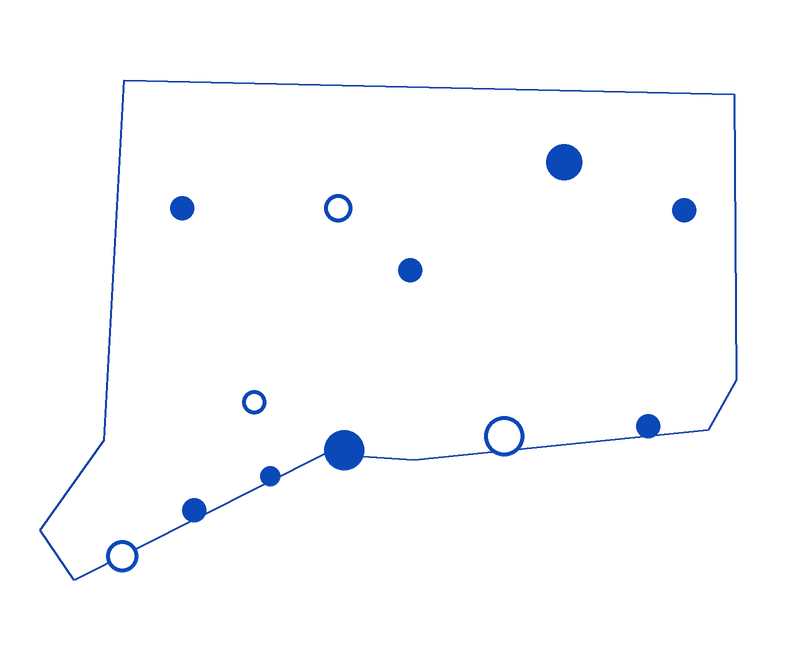

We follow every graduating class from its PSAT to its SAT across Connecticut's high-schools, learning what actually helped students grow.
Try the Simulator Explore the dataYour projected SAT
1340
up from 1180 on your diagnostic

Filter by region, public or private, tuition and endowment, then follow any class from PSAT to SAT.
Explore Data →1 · Take the simulated test
Question 7 of 20 · Math
If 3x + 7 = 22, what is the value of 6x − 5?
A 25
B 30
C 35
D 40
2 · Apply what top schools did
Pick the habits you'll commit to
+45 Khan Academy · 30 min a day
+25 Review your PSAT score report
+15 Weekly study group
+60 4 full-length practice tests
3 · See your projected SAT
1310
Likely range 1270–1350
Diagnostic 1180 +130
Estimates are based on growth patterns at Connecticut's top-growth schools.
Start the simulator